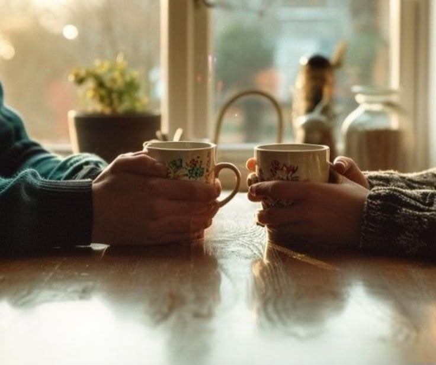

THE ART
OF
TEA MAKING
Tea has been enjoyed for thousands of years in many cultures around the world. Different herbs and spices come from various regions and have been used for their flavors and health benefits.

THE JOURNEY
"Steam curled from my mug, and just like that, I was back home."
I've loved making tea since I was a kid. But when I hit middle school, I slowly drifted toward coffee, and tea got left behind for a while. It wasn't until university that chai made its way back into my daily life. Sharing a cup with my mom and dad reminded me of home and comfort, two things I didn't realize I was missing until I had a cup again.
After moving away, I started craving those cozy chai moments, not just the tea, but the way it helped me feel connected. When I wanted to bond with my new roommate, I brewed her a cup of chamomile to help with her sleep. She wasn't really a tea person, but she liked my blend, and we ended up talking late into the night.
That summer, I started blending my own teas, mostly for digestion and just feeling better in general. My mom and dad especially loved the fennel tea I made. It became a little ritual in itself. Playing with herbs and flavors, researching, something just for me, comforting, creative, and grounding all at once.
consider this your official nudge to romanticize your tea habits.